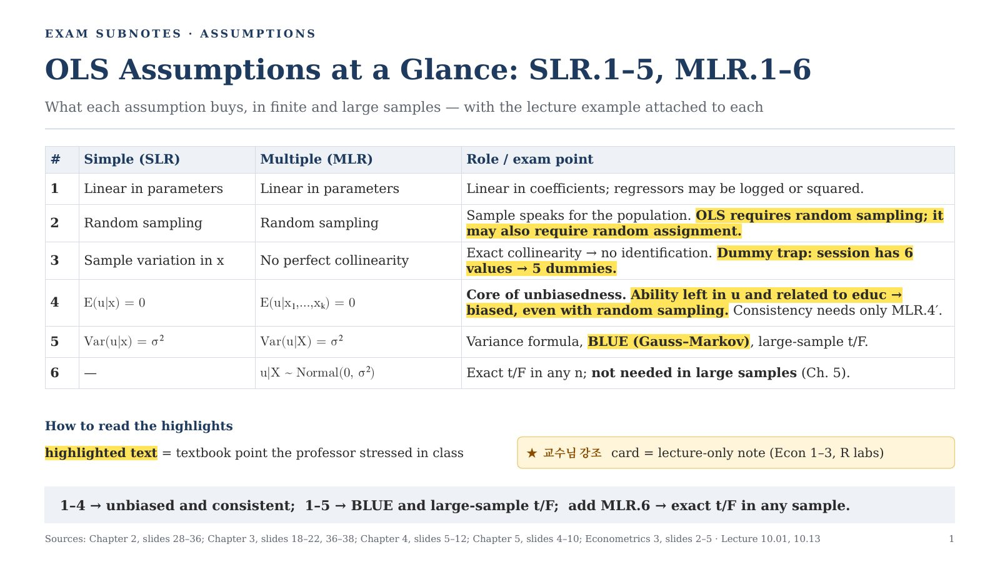
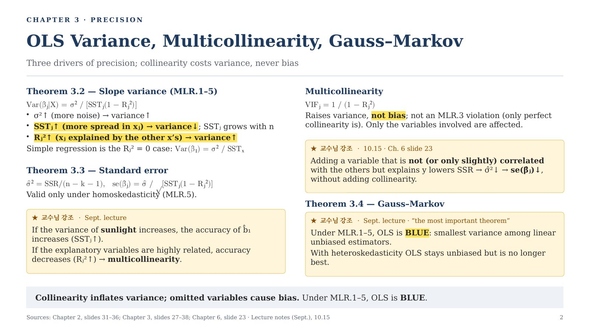
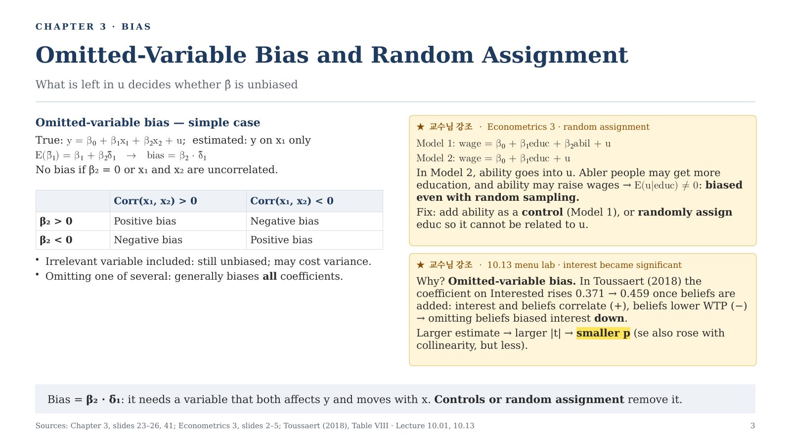
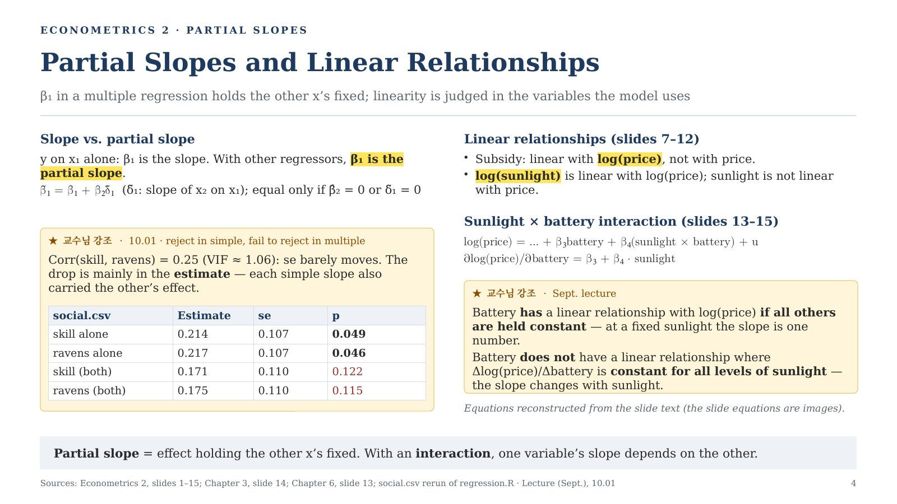
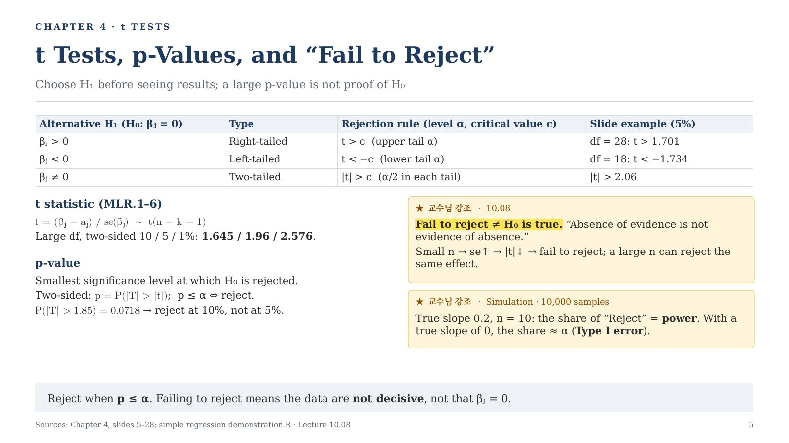
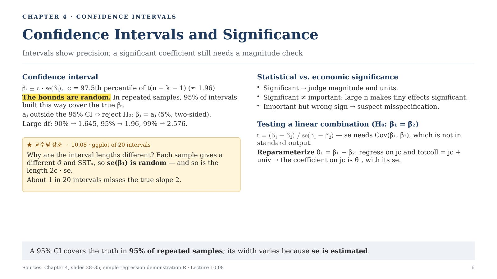
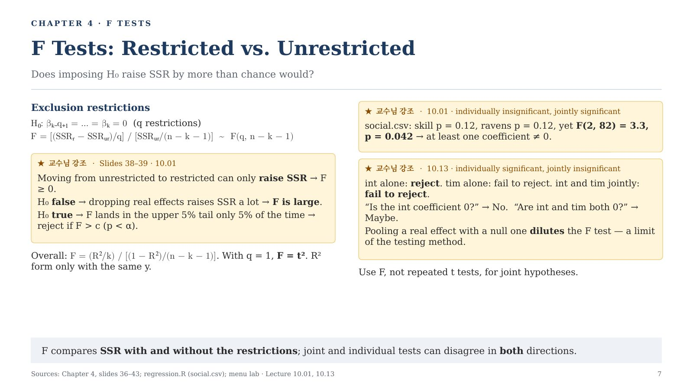
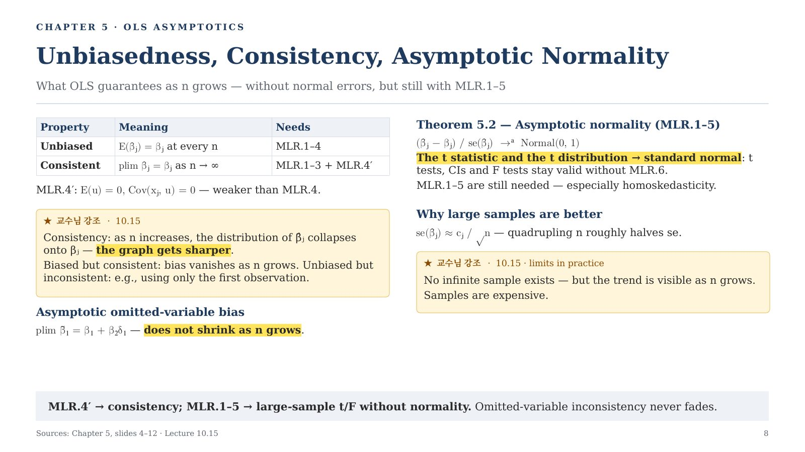
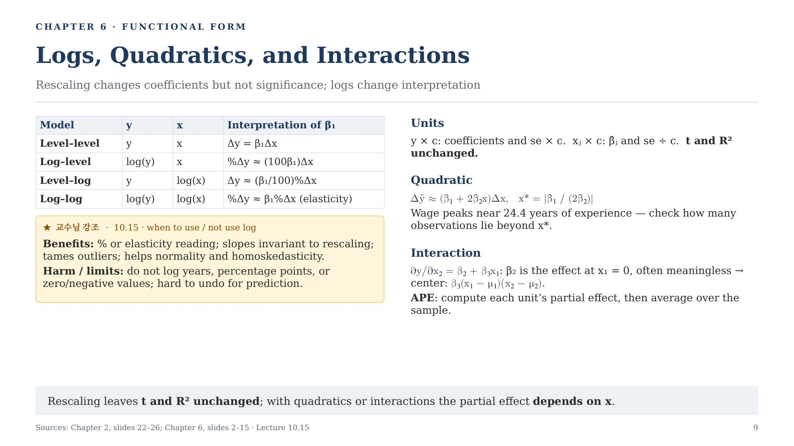
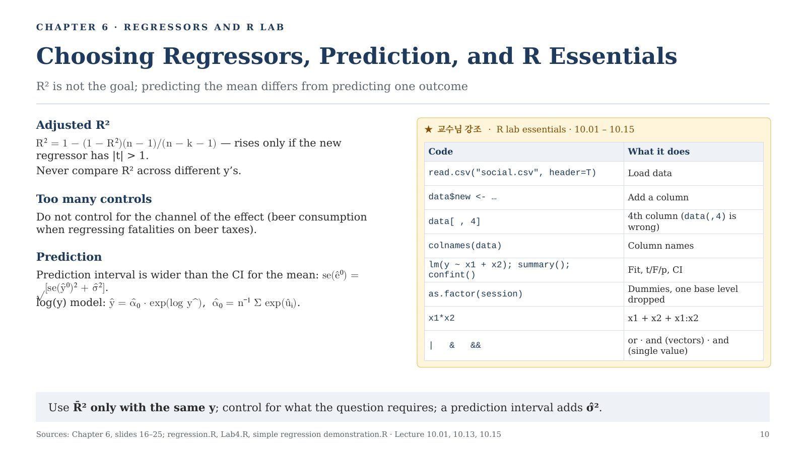

Econometrics 서브노트 Ch.2–6 · 10쪽 요약
시험 핵심만 추린 10쪽짜리 영문 요약. 교수님이 수업에서 강조한 내용을 따로 표시했다.
노란 형광 교과서 내용 중 교수님 강조
★ 교수님 강조 카드: 수업·R 실습에서만 나온 내용

1 · OLS Assumptions at a Glance
2 · OLS Variance, Multicollinearity, Gauss–Markov
3 · Omitted-Variable Bias and Random Assignment
4 · Partial Slopes and Linear Relationships
5 · t Tests, p-Values, and “Fail to Reject”
6 · Confidence Intervals and Significance
7 · F Tests: Restricted vs. Unrestricted
8 · Unbiasedness, Consistency, Asymptotic Normality
9 · Logs, Quadratics, and Interactions
10 · Choosing Regressors, Prediction, and R Essentials
← 처음으로